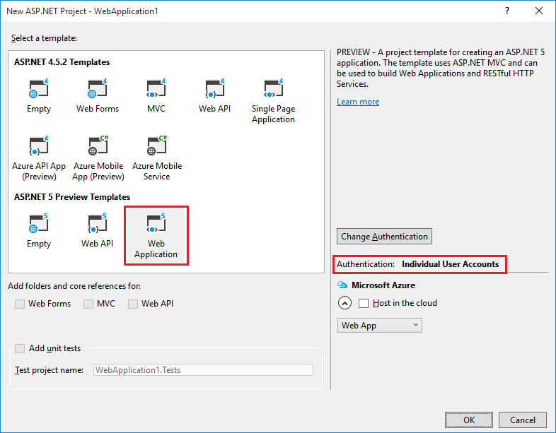
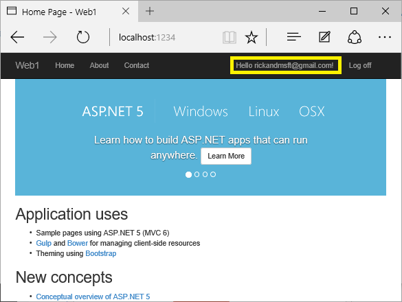

Account Confirmation and Password Recovery with ASP.NET Identity¶
This tutorial shows you how to build an ASP.NET 5 Web site with email confirmation and password reset using ASP.NET Identity.
- In this article:
Create a New ASP.NET 5 Project¶
Create a new ASP.NET 5 web app with individual user accounts.
Run the app and then click on the Register link and register a user. At this point, the only validation on the email is with the [EmailAddress] attribute. After you submit the registration, you are logged into the app. Later in the tutorial we’ll change this so new users cannot log in until their email has been validated.
In SQL Server Object Explorer (SSOX), navigate to (localdb)MSSQLLocalDB(SQL Server 12). Right click on dbo.AspNetUsers > View Data:


Note the EmailConfirmed field is False.
Right-click on the row and from the context menu, select Delete. You might want to use this email again in the next step, when the app sends a confirmation email. Deleting the email alias now will make it easier in the following steps.
Require SSL¶
In this section we’ll set up our Visual Studio project to use SSL and our project to require SSL.
Enable SSL in Visual Studio¶
- From the Project menu, select Web app Properties.
- Select Debug in the left pane (see image below).
- Check Enable SSL, and then save changes (this step is necessary to populate the URL box).
- Copy the URL and paste it into the Launch URL box.
Require HTTPS¶
Add the [RequireHttps] attribute to each controller. The [RequireHttps] attribute will redirect all HTTP GET requests to HTTPS GET and will reject all HTTP POSTs. A security best practice is to use HTTPS for all requests.
[RequireHttps]
public class HomeController : Controller
Require email confirmation¶
It’s a best practice to confirm the email of a new user registration to verify they are not impersonating someone else (that is, they haven’t registered with someone else’s email). Suppose you had a discussion forum, you would want to prevent “bob@example.com” from registering as “joe@contoso.com”. Without email confirmation, “joe@contoso.com” could get unwanted email from your app. Suppose Bob accidentally registered as “bib@example.com” and hadn’t noticed it, he wouldn’t be able to use password recovery because the app doesn’t have his correct email. Email confirmation provides only limited protection from bots and doesn’t provide protection from determined spammers who have many working email aliases they can use to register.
You generally want to prevent new users from posting any data to your web site before they have been confirmed by email, an SMS text message, or another mechanism. In the sections below, we will enable email confirmation and modify the code to prevent newly registered users from logging in until their email has been confirmed.
Configure email provider¶
We’ll use the Options pattern to access the user account and key settings. For more information, see Configuration.
- Create a class to fetch the secure email key. For this sample, the
AuthMessageSenderOptionsclass is created in the Services/AuthMessageSenderOptions.cs file.public class AuthMessageSenderOptions { public string SendGridUser { get; set; } public string SendGridKey { get; set; } }
Set the SendGridUser and SendGridKey with the secret-manager tool. For example:
C:\WebApplication1\src\WebApplication1>user-secret set SendGridUser RickAndMSFT
info: Successfully saved SendGridUser = RickAndMSFT to the secret store.
On Windows, Secret Manager stores your keys/value pairs in a secrets.json file in the %APPDATA%/Microsoft/UserSecrets/<userSecretsId> directory. The userSecretsId directory can be found in your project.json file. For this example, the first few lines of the project.json file are shown below:
{ "webroot": "wwwroot", "userSecretsId": "aspnet5-WebApplication1-df49bbe3-19e1-41d7-9fc8-059067304c31", "version": "1.0.0-*", "dependencies": {
At this time, the contents of the project.json file are not encrypted. The project.json file is shown below (the sensitive keys have been removed.)
{
"SendGridUser": "RickAndMSFT",
"SendGridKey": "",
"Authentication:Facebook:AppId": "",
"Authentication:Facebook:AppSecret": ""
}
Configure startup to use AuthMessageSenderOptions¶
Add AuthMessageSenderOptions to the service container at the end of the ConfigureServices method in the Startup.cs file:
// Register application services.
services.AddTransient<IEmailSender, AuthMessageSender>();
services.AddTransient<ISmsSender, AuthMessageSender>();
services.Configure<AuthMessageSenderOptions>(Configuration);
}
Configure the AuthMessageSender class¶
This tutorial shows how to add email notification through SendGrid, but you can send email using SMTP and other mechanisms.
- Install the SendGrid NuGet package. From the Package Manager Console, enter the following the following command:
Install-Package SendGrid
- Follow the instructions Create a SendGrid account to register for a free SendGrid account.
- Add code in Services/MessageServices.cs similar to the following to configure SendGrid
public class AuthMessageSender : IEmailSender, ISmsSender
{
public AuthMessageSender(IOptions<AuthMessageSenderOptions> optionsAccessor)
{
Options = optionsAccessor.Options;
}
public AuthMessageSenderOptions Options { get; } // set only via Secret Manager
public Task SendEmailAsync(string email, string subject, string message)
{
// Plug in your email service here to send an email.
var myMessage = new SendGrid.SendGridMessage();
myMessage.AddTo(email);
myMessage.From = new System.Net.Mail.MailAddress("Joe@contoso.com", "Joe Smith");
myMessage.Subject = subject;
myMessage.Text = message;
myMessage.Html = message;
var credentials = new System.Net.NetworkCredential(
Options.SendGridUser,
Options.SendGridKey);
// Create a Web transport for sending email.
var transportWeb = new SendGrid.Web(credentials);
// Send the email.
if (transportWeb != null)
{
return transportWeb.DeliverAsync(myMessage);
}
else
{
return Task.FromResult(0);
}
}
public Task SendSmsAsync(string number, string message)
{
// Plug in your SMS service here to send a text message.
return Task.FromResult(0);
}
}
Note
SendGrid doesn’t currently target dnxcore50: If you build your project you will get compilation errors. This is because SendGrid does not have a package for dnxcore50 and some APIs such as System.Mail are not available on .NET Core. You can remove dnxcore50 from project.json or call the REST API from SendGrid to send email. The code below shows the updated project.json file with "dnxcore50": { } removed.
"frameworks": {
"dnx451": { }
},
Enable account confirmation and password recovery¶
The template already has the code for account confirmation and password recovery. Follow these steps to enable it:
- Find the
[HttpPost] Registermethod in the AccountController.cs file. - Uncomment the code to enable account confirmation.
//
// POST: /Account/Register
[HttpPost]
[AllowAnonymous]
[ValidateAntiForgeryToken]
public async Task<IActionResult> Register(RegisterViewModel model)
{
EnsureDatabaseCreated(_applicationDbContext);
if (ModelState.IsValid)
{
var user = new ApplicationUser { UserName = model.Email, Email = model.Email };
var result = await _userManager.CreateAsync(user, model.Password);
if (result.Succeeded)
{
// For more information on how to enable account confirmation and password reset please visit http://go.microsoft.com/fwlink/?LinkID=532713
// Send an email with this link
var code = await _userManager.GenerateEmailConfirmationTokenAsync(user);
var callbackUrl = Url.Action("ConfirmEmail", "Account", new { userId = user.Id, code = code }, protocol: Context.Request.Scheme);
await _emailSender.SendEmailAsync(model.Email, "Confirm your account",
"Please confirm your account by clicking this link: <a href=\"" + callbackUrl + "\">link</a>");
//await _signInManager.SignInAsync(user, isPersistent: false);
return RedirectToAction(nameof(HomeController.Index), "Home");
}
AddErrors(result);
}
// If we got this far, something failed, redisplay form
return View(model);
Note: We’re also preventing a newly registered user from being automatically logged on by commenting out the following line:
//await _signInManager.SignInAsync(user, isPersistent: false);
- Enable password recovery by uncommenting the code in the
ForgotPasswordaction in the Controllers/AccountController.cs file.
//
// POST: /Account/ForgotPassword
[HttpPost]
[AllowAnonymous]
[ValidateAntiForgeryToken]
public async Task<IActionResult> ForgotPassword(ForgotPasswordViewModel model)
{
if (ModelState.IsValid)
{
var user = await _userManager.FindByNameAsync(model.Email);
if (user == null || !(await _userManager.IsEmailConfirmedAsync(user)))
{
// Don't reveal that the user does not exist or is not confirmed
return View("ForgotPasswordConfirmation");
}
// For more information on how to enable account confirmation and password reset please visit http://go.microsoft.com/fwlink/?LinkID=532713
// Send an email with this link
var code = await _userManager.GeneratePasswordResetTokenAsync(user);
var callbackUrl = Url.Action("ResetPassword", "Account", new { userId = user.Id, code = code }, protocol: Context.Request.Scheme);
await _emailSender.SendEmailAsync(model.Email, "Reset Password",
"Please reset your password by clicking here: <a href=\"" + callbackUrl + "\">link</a>");
return View("ForgotPasswordConfirmation");
}
// If we got this far, something failed, redisplay form
return View(model);
Uncomment the highlighted ForgotPassword from in the Views/Account/ForgotPassword.cshtml view file.
@model ForgotPasswordViewModel
@{
ViewData["Title"] = "Forgot your password?";
}
<h2>@ViewData["Title"].</h2>
<p>
For more information on how to enable reset password please see this <a href="http://go.microsoft.com/fwlink/?LinkID=532713">article</a>.
</p>
<form asp-controller="Account" asp-action="ForgotPassword" method="post" class="form-horizontal" role="form">
<h4>Enter your email.</h4>
<hr />
<div asp-validation-summary="ValidationSummary.All" class="text-danger"></div>
<div class="form-group">
<label asp-for="Email" class="col-md-2 control-label"></label>
<div class="col-md-10">
<input asp-for="Email" class="form-control" />
<span asp-validation-for="Email" class="text-danger"></span>
</div>
</div>
<div class="form-group">
<div class="col-md-offset-2 col-md-10">
<button type="submit" class="btn btn-default">Submit</button>
</div>
</div>
</form>
@section Scripts {
@{ await Html.RenderPartialAsync("_ValidationScriptsPartial"); }
}
Register, confirm email, and reset password¶
In this section, run the web app and show the account confirmation and password recovery flow.
- Run the application and register a new user

Check your email for the account confirmation link. If you don’t get the email notification:
- Check the SendGrid web site to verify your sent mail messages.
- Check your spam folder.
- Try another email alias on a different email provider (Microsoft, Yahoo, Gmail, etc.)
- In SSOX, navigate to dbo.AspNetUsers and delete the email entry and try again.
Click the link to confirm your email.
Log in with your email and password.
Log off.
Test password reset¶
- Login and select Forgot your password?
- Enter the email you used to register the account.
- An email with a link to reset your password will be sent. Check your email and click the link to reset your password. After your password has been successfully reset, you can login with your email and new password.
Require email confirmation before login¶
With the current templates, once a user completes the registration form, they are logged in (authenticated). You generally want to confirm their email before logging them in. In the section below, we will modify the code to require new users have a confirmed email before they are logged in. Update the [HttpPost] Login action in the AccountController.cs file with the following highlighted changes.
//
// POST: /Account/Login
[HttpPost]
[AllowAnonymous]
[ValidateAntiForgeryToken]
public async Task<IActionResult> Login(LoginViewModel model, string returnUrl = null)
{
EnsureDatabaseCreated(_applicationDbContext);
ViewData["ReturnUrl"] = returnUrl;
if (ModelState.IsValid)
{
// Require the user to have a confirmed email before they can log on.
var user = await _userManager.FindByNameAsync(model.Email);
if (user != null)
{
if (!await _userManager.IsEmailConfirmedAsync(user))
{
ModelState.AddModelError(string.Empty, "You must have a confirmed email to log in.");
return View(model);
}
}
// This doesn't count login failures towards account lockout
// To enable password failures to trigger account lockout, set lockoutOnFailure: true
var result = await _signInManager.PasswordSignInAsync(model.Email, model.Password, model.RememberMe, lockoutOnFailure: false);
if (result.Succeeded)
{
return RedirectToLocal(returnUrl);
}
if (result.RequiresTwoFactor)
{
return RedirectToAction(nameof(SendCode), new { ReturnUrl = returnUrl, RememberMe = model.RememberMe });
}
if (result.IsLockedOut)
{
return View("Lockout");
}
else
{
ModelState.AddModelError(string.Empty, "Invalid login attempt.");
return View(model);
}
}
// If we got this far, something failed, redisplay form
return View(model);
Note
A security best practice is to not use production secrets in test and development. If you publish the app to Azure, you can set the SendGrid secrets as application settings in the Azure Web App portal. The configuration system is setup to read keys from environment variables.
Combine social and local login accounts¶
To complete this section, you must first enable an external authentication provider. See Enabling authentication using external providers.
You can combine local and social accounts by clicking on your email link. In the following sequence “RickAndMSFT@gmail.com” is first created as a local login, but you can create the account as a social login first, then add a local login.
Click on the Manage link. Note the 0 external (social logins) associated with this account.

Click the link to another login service and accept the app requests. In the image below, Facebook is the external authentication provider:

The two accounts have been combined. You will be able to log on with either account. You might want your users to add local accounts in case their social log in authentication service is down, or more likely they have lost access to their social account.